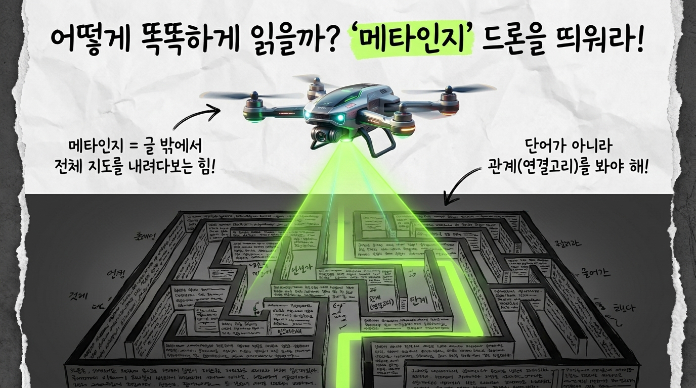
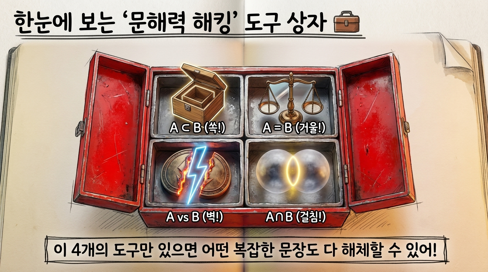
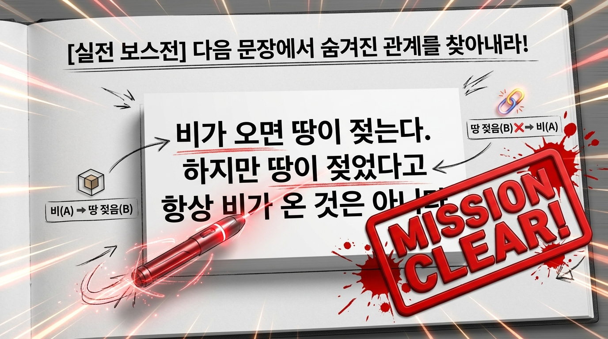
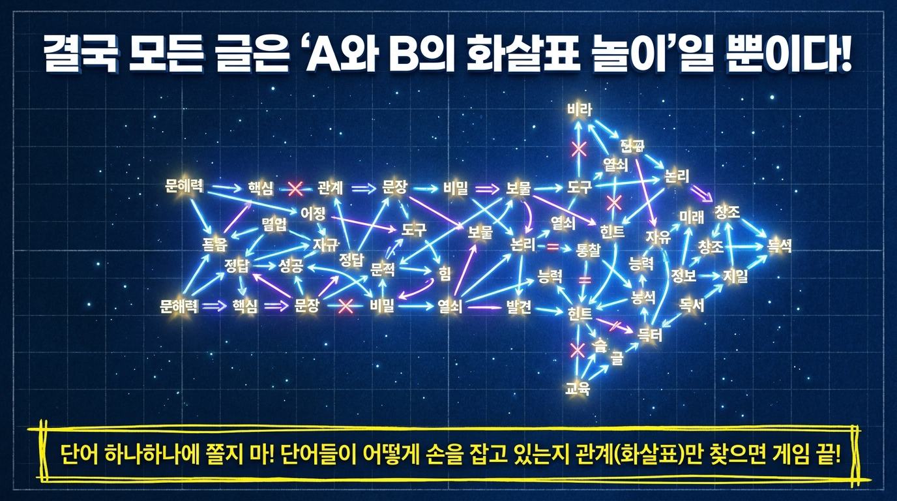

‘문해력 해킹’ 시크릿 노트
글씨는 다 읽었는데,
왜 무슨 뜻인지 모를까?
💡 비밀은 논리에 있다!
▲ 결과물 미리보기: 샘플 영상
문제 발견!
교과서만 펴면 왜 길을 잃어버릴까?
🧩
단어 뜻은 아는데
조립이 안 됨.
조립이 안 됨.
😵💫
문장이 조금만
길어지면 멘붕.
길어지면 멘붕.
그냥 눈으로만 읽어서는 절대 탈출할 수 없어! 🚫
해결 열쇠 1
어떻게 똑똑하게 읽을까? ‘메타인지’ 드론을 띄워라!

메타인지 = 글 밖에서 전체 지도를 내려다보는 힘!
단어가 아니라 관계(연결고리)를 봐야 해!
8주 커리큘럼
문해력 해킹, 스텝별로 정복하기
{{ step.no }}
{{ step.title }}
{{ step.sub }}
{{ step.desc }}
한눈에 정리
‘문해력 해킹’ 도구 상자 🧰
📦
A ⊂ B
(쏙!)
⚖️
A = B
(거울!)
⚡
A vs B
(벽!)
🫧
A ∩ B
(걸침!)

이 4개의 도구만 있으면 어떤 복잡한 문장도 다 해체할 수 있어!
실전 보스전 👾
다음 문장에서 숨겨진 관계를 찾아내라!

비가 오면 땅이 젖는다. ✅ 비(A) → 땅 젖음(B)
하지만 땅이 젖었다고 항상 비가 온 것은 아니다! 땅 젖음(B) ❌→ 비(A)
MISSION CLEAR!
결국 모든 글은 ‘A와 B의 화살표 놀이’일 뿐이다!

단어 하나하나에 쫄지 마! 단어들이 어떻게 손을 잡고 있는지 관계(화살표)만 찾으면 게임 끝!
교육 효과 📈
논리 안경을 쓰면, 이렇게 달라져요!
* 아래 수치는 커리큘럼 목표 기준 예시 데이터입니다.
4대 논리 도구 역량
학습 전 · 후 이해도
8주 향상 곡선
+38%
문장 이해도
4개
논리 도구 마스터
8주
완성 커리큘럼